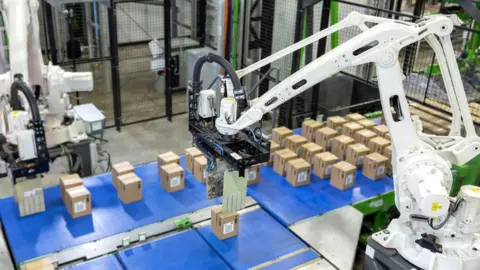
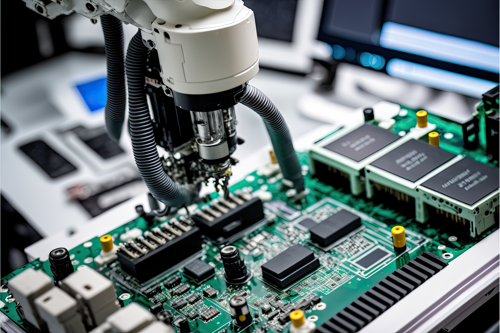

Introduction
Within the field of electricity, one area that excites many young enthusiasts starting a career in electrical engineering is its application in the robotics industry. Many of us think that a large part of our work will be designing these robots, but in many job opportunities, this is not the case. This article aims to help young people beginning their electrical engineering studies understand the job opportunities available and how this field has revolutionized the application of robots in the production and automation industries in recent years. (Although it is currently only a preliminary draft)
The field of robotics has seen significant growth in recent years, with applications ranging from manufacturing and healthcare to space exploration and entertainment. Electrical engineers play a crucial role in the design, development, and maintenance of robotic systems. They are responsible for creating the electrical circuits and systems that allow robots to function effectively. This includes designing control systems, developing sensors and actuators, and ensuring that the robots can communicate with other devices and systems. As the demand for automation continues to rise, the need for skilled electrical engineers in the robotics industry is expected to grow significantly.
What is robotics?
Robotics is a multidisciplinary field that combines engineering, computer science, and artificial intelligence to design, build, and operate robots. Robots are machines that can perform tasks autonomously or semi-autonomously, often mimicking human actions. They can be used in various applications, including manufacturing, healthcare, space exploration, and entertainment. The field of robotics encompasses a wide range of technologies, including sensors, actuators, control systems, and machine learning algorithms. As the field continues to evolve, robots are becoming increasingly sophisticated and capable of performing complex tasks in various environments.
The Role of Electrical Engineers in Robotics
Electrical engineers in the robotics industry are involved in various aspects of robot design and development. They work on creating the electrical systems that power the robots, including designing circuits for motors, sensors, and communication systems. They also develop control algorithms that allow robots to perform specific tasks and interact with their environment. Additionally, electrical engineers are responsible for ensuring that the robots are energy-efficient and can operate safely in various conditions. Their work is essential in advancing the capabilities of robots and expanding their applications across different industries.

The robotics industry offers a wide range of job opportunities for electrical engineers. They can work in research and development, designing new robotic systems and improving existing ones. They can also work in manufacturing, where they are responsible for maintaining and troubleshooting robotic systems used in production lines. Additionally, electrical engineers can find opportunities in the healthcare industry, developing robotic systems for surgery and rehabilitation. The entertainment industry also offers opportunities for electrical engineers to design and develop robots for theme parks and movies. Overall, the field of robotics provides a diverse range of career paths for electrical engineers, allowing them to apply their skills in various industries and contribute to the advancement of technology.
For many young people starting out in electrical engineering here in Utah, I believe job opportunities are concentrated in large manufacturing industries in defense and medicine. Many others will also find better opportunities in high-voltage systems where robotics is nonexistent or only used in special cases. In my experience, if a student's desire is to pursue this field, I think there are better engineering disciplines that offer better job prospects than electrical engineering. However, this is changing with the widespread adoption of electrical systems as they replace pneumatic and hydraulic systems.

Conclusion
In conclusion, the field of electrical engineering plays a crucial role in the robotics industry, offering a wide range of job opportunities for those interested in this exciting field. As technology continues to advance, the demand for skilled electrical engineers in robotics is expected to grow, making it a promising career path for young enthusiasts. By understanding the various roles and opportunities available, aspiring electrical engineers can better prepare themselves for a successful career in the robotics industry.
Bibliography:
- [1] “Robotics for Electronics: Strong & Reliable: Kassow Robots,” Robotics For Electronics | Strong & Reliable | Kassow Robots, https://www.kassowrobots.com/industries/electronics-robotics (accessed Mar. 29, 2026).
- [2] “Introduction to Robotics,” MIT OpenCourseWare, https://ocw.mit.edu/courses/aeronautics-and-astronautics/2-12-introduction-to-robotics-fall-2005/ (accessed Mar. 29, 2026).
- [3] “Robotics: A Very Short Introduction,” Oxford University Press, https://www.oxfordhandbooks.com/view/10.1093/oxfordhb/9780198728465.001.0001/oxfordhb-9780198728465-e-1 (accessed Mar. 29, 2026).
- [4] B. Morris, “How robots are taking over warehouse work,” BBC News, https://www.bbc.com/news/business-68639533 (accessed Mar. 29, 2026).